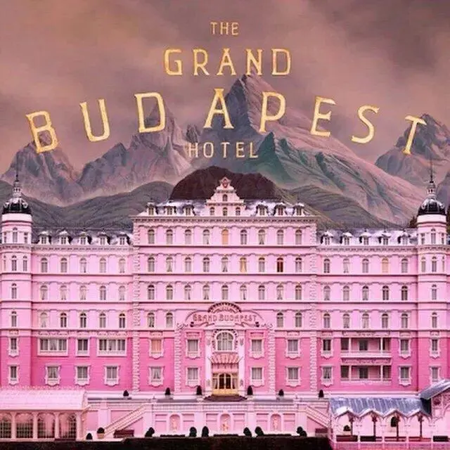
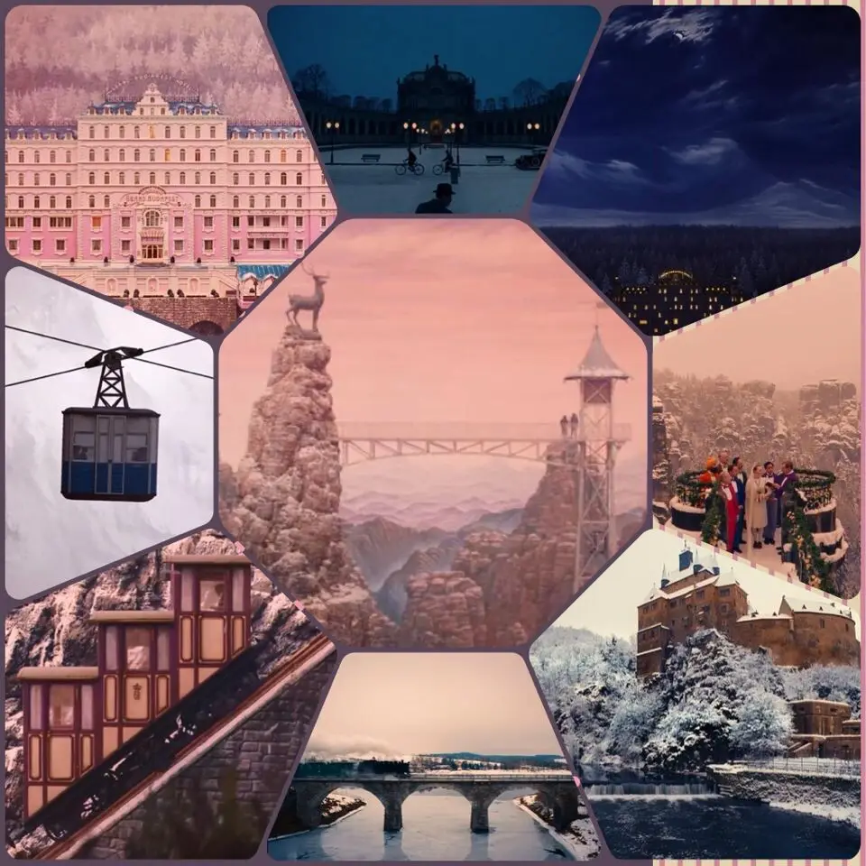
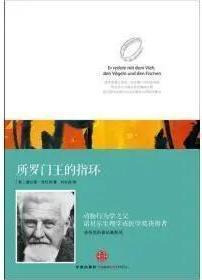

2022
06-23
布达佩斯大饭店
起初是被精美的色彩和构图吸引,看的过程像进入一场冒险之旅, 镜头切换、画面比例、构图对称性,恰到好处的故事进展、 叙事节奏以及绝妙的配乐,观感极佳。影片整体表现出一种严谨而又荒诞的画风,展现欧洲最后的优雅与文明, Gustave先生便是影片中那优雅与文明的代表...
书籍

《所罗门王的指环》
" 你对大自然知道的越多，就会更深刻，更持久的为它迷人的真相所感动 "
The more you know about nature, the more deeply and permanently you will be moved by its fascinating truth.

《追风筝的人》
为你，千千万万遍。
For you, a thousand times over.